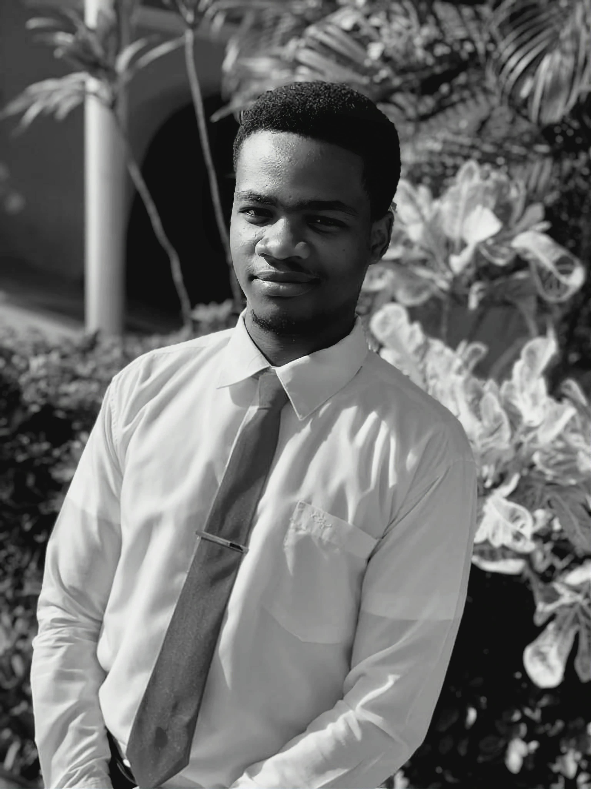

Autobiography
Hello, I'm Neil Taison Rigaud. Originally from southern Haiti, I ventured into Civil Engineering after high school. Yet, my time at Quisqueya University in Port-au-Prince revealed a new fascination for Computer Science – the art of using algorithms to improve life.
In 2022, fueled by this passion, I headed to Taiwan to fully embrace Computer Science. I'm aiming to specialize in AI and Data Science, using data to drive innovation for a smarter future.
Join me as I explore technology and knowledge, unraveling possibilities within code and data.
- Neil Taison Rigaud (郭泰森)